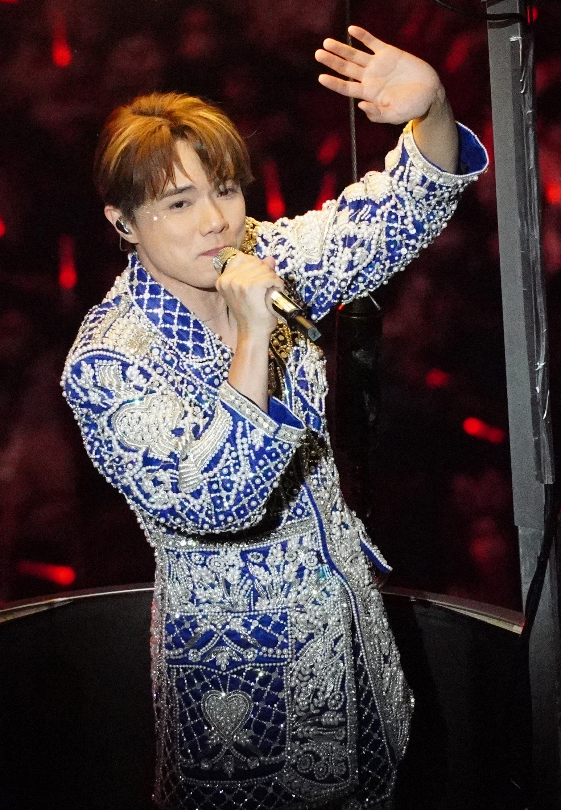
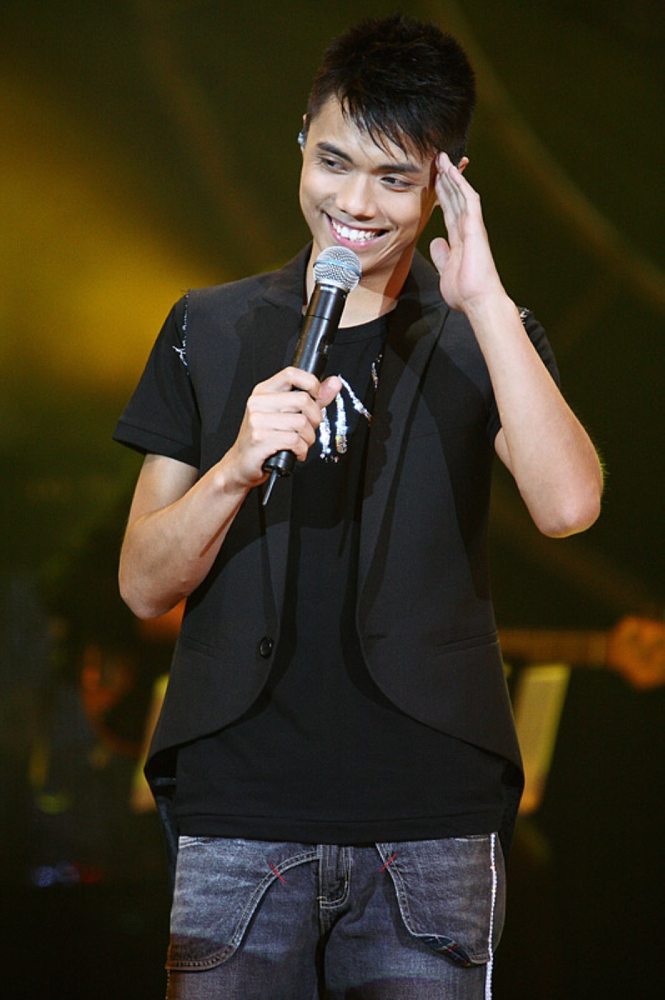
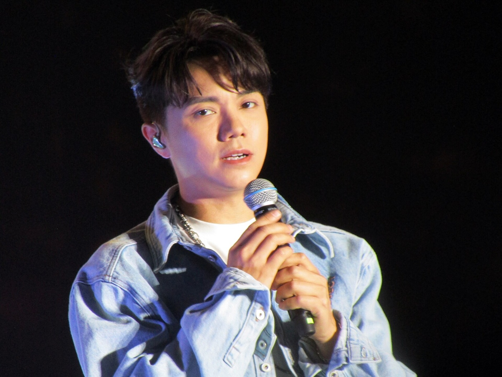
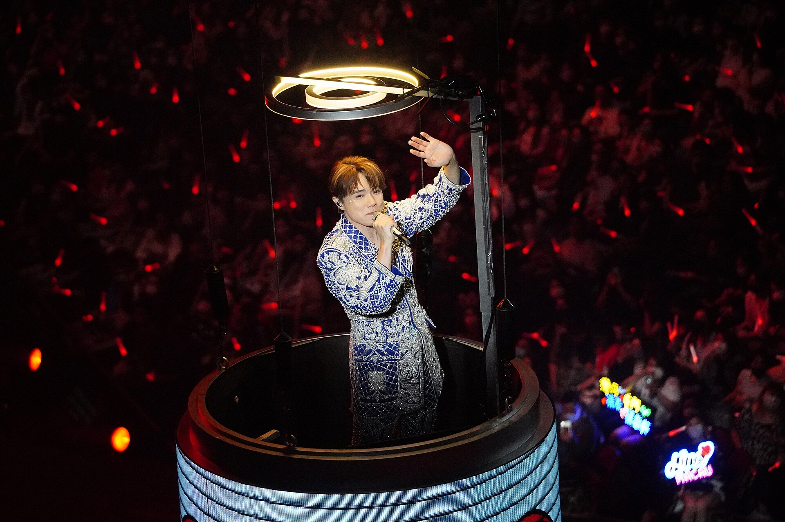

Hins Cheung · Guangzhou, 1981
把没说出口的喜欢，唱成一整座馆的合唱。
广州出生的香港创作歌手。现场稳，说话密。没听过他的话，不必从第一张专辑开始。

01 — 认识
他 1981 年 2 月 1 日生在广州，2002 年前后到香港出道。别人记住他，常常是从一首歌开始：《断点》走红的时候他还很年轻；后来《樱花树下》《春秋》《只是太爱你》，把“现场比录音还稳”唱成了口碑。
他写歌、做监制，也把演唱会讲成一晚很长的谈话。2008 年《酷爱》是他第一次在红馆开个人演唱会。2021 年底到 2022 年，出道二十周年的 The Next 20 又回到红馆，一场接一场加到尾。



02 — 入坑
四条路都是现场，不是歌单清单。点进去会滚到下面的播放器，在这个页面里看。
03 — 现场与访谈
视频留在 B 站，这里用官方播放器嵌入。弹幕默认关掉。若页面里打不开，每条都有原视频链接。
04 — 相册
这些是可以授权使用的现场照片，来自 Wikimedia Commons。点开可以看作者。小红书上的图版权在拍摄者手里，这里没有转存。